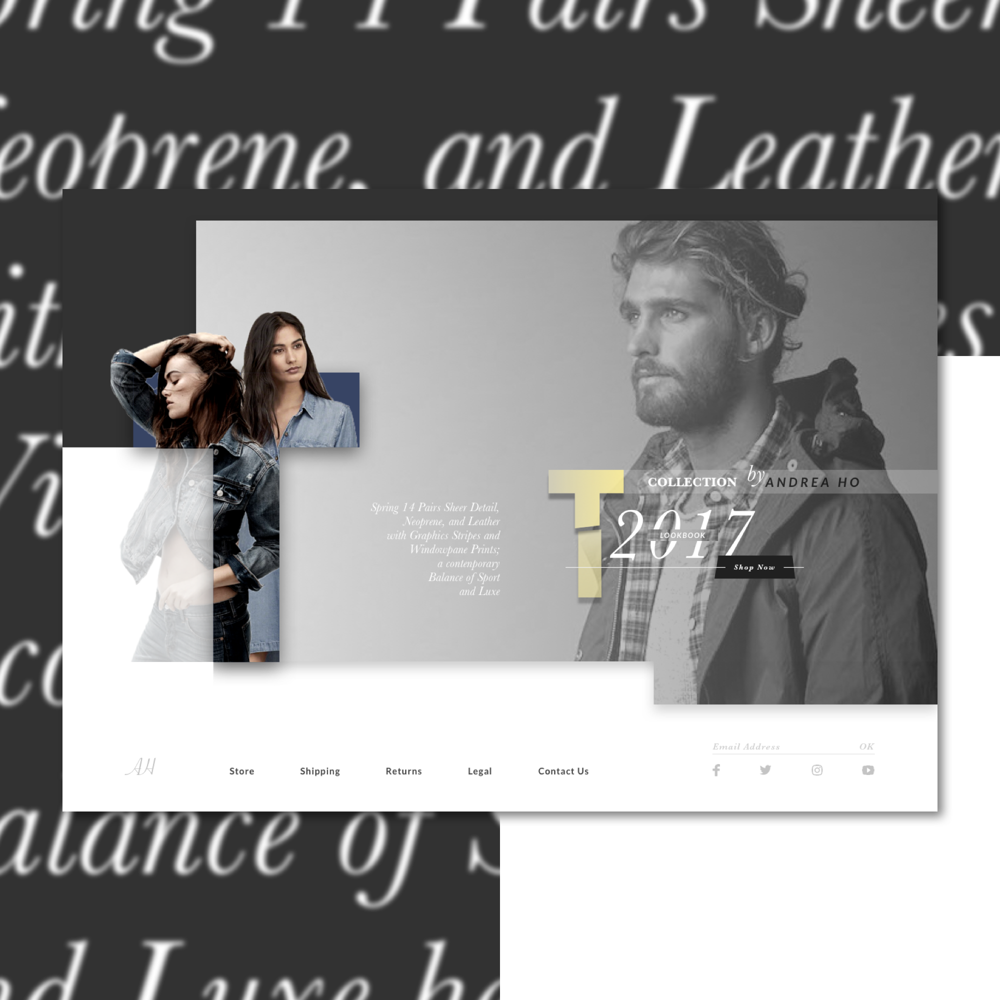

Day 95 - What's in Store?
Today I decided to copy this designfrom Behance. It wasn't a hard design to create, but it took a lot longer than I thought. Here's why:
First, finding the right images were so very difficult. I wanted a specific background image of a close up shot of a male model looking to the left. Not only that, the female models on the side were just as difficult to find. I wanted the two female models to be looking at different directions and dressed in similar ways. Once again, I had to use Photoshop's Quick Selection Tool to get rid of the background for the models.
Another important a designer needs to grasp for this design is the ability to know where the layers are. I had to duplicate some items in order to have it both masked, but still having a corner popping out. This can be seen in the T shape on the left side. The female models were masked onto the letter (after converting to outlines), but they were alo duplicated so the heads would pop out of the letter as well.
I want to also point out how I created the "Lookbook" inside 2017 beside the yellow T in the middle. First I realized I couldn't create a transparent box to show the background because the 2017 behind it will show as well. So what I had to do was replicate the background image, then crop to that area. However, I soon realized the colour difference was really off. I realized the reason for this was the gradient on the background image. When I cropped it, the length was shorter, causing a drastic gradient within the small rectangle. What I had to do was the adjust the gradient to match the colour in the background.
Yes, this design took a lot more longer than I would've liked, but I have no regrets taking on this challenge. And yes, I would've liked to have found the "perfect" images faster and easier, however, I didn't mind it too much. Luckily, I was able to learn a lot from this design and ended up with a pretty interesting result that I never usually get.